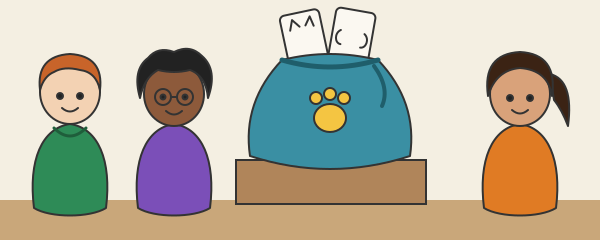

Finding a rule from examples
Learn with an AI tutor
An AI tutor explains this page to you and helps you with the exercises. Choose your assistant:
Open with Claude Open with ChatGPT Open with Mistral Vibe
You use your own account with the provider. The assistant is not offered by lernapps.net: lernapps only provides the content and the exercises. The choice holds for all pages, on this device only.
At the shelter: six cards in the bag

© CC-BY-4.0From the left: Jona, Mia, the training bag and Selin.
First, class 6b tries it themselves, with no computer. Mia leads the game. She puts six animal cards into a cloth bag, the training bag. Each card says whether the animal is a dog or a cat.
Here you find a rule from examples yourself and test it.
- Luna · catpointed ears, short snout, small, narrow pupils
- Mimi · catpointed ears, short snout, small, narrow pupils
- Tiger · catpointed ears, short snout, big, narrow pupils
- Bruno · dogfloppy ears, long snout, big, round pupils
- Waldi · dogfloppy ears, long snout, small, round pupils
- Otto · dogfloppy ears, short snout, small, round pupils
The six cards in the bag:
- Luna, cat: pointed ears, short snout, small, narrow pupils
- Mimi, cat: pointed ears, short snout, small, narrow pupils
- Tiger, cat: pointed ears, short snout, big, narrow pupils
- Bruno, dog: floppy ears, long snout, big, round pupils
- Waldi, dog: floppy ears, long snout, small, round pupils
- Otto, dog: floppy ears, short snout, small, round pupils
Exercise
Solution
pointed ears right answer
Luna, Mimi and Tiger have pointed ears. Bruno, Waldi and Otto have floppy ears.
narrow pupils right answer
All three cats have narrow pupils, all three dogs have round ones.
a short snout
All the cats have a short snout. But so does Otto, a dog.
They are small.
Tiger is a cat and big. And Waldi, a dog, is small.
Two features separate the cats and dogs here.
The card game: how to play
- feature
Something you can observe about an example, such as the shape of the ears.
- label
The right answer for an example; for us “dog” or “cat”.
Play in groups of three or four. You need a bag and twelve cards: the six above and the six below.
- Copy the cards onto paper. Write the label (dog or cat) on the back.
- One person leads the game. They put six cards into the bag. These are the examples.
- The others take the cards out and read the labels. Look for a rule with one question about a feature, for example: “Does the animal have pointed ears? Yes: cat. No: dog.” The rule must fit all six examples.
- The leader shows new cards with the label face down. Use your rule to say dog or cat. Then turn the card over.
- If it is wrong, look for a better one.
- training data
The examples with labels that something learns from: for us, the cards in the training bag.
- Flocke · catfloppy ears, short snout, small, narrow pupils
- Minka · catpointed ears, long snout, small, narrow pupils
- Rex · dogpointed ears, long snout, big, round pupils
- Krümel · dogpointed ears, short snout, small, round pupils
- Bella · dogfloppy ears, short snout, big, round pupils
- Sammy · dogpointed ears, short snout, big, round pupils
The six new cards: Flocke and Minka are cats, Rex, Krümel, Bella and Sammy are dogs. Each card shows a drawn animal with four features: ears (pointed or floppy), snout (short or long), size (small or big) and pupils (narrow or round).
Jona's rule and Selin's rule
Jona finds the rule: “Does the animal have pointed ears? Yes: cat. No: dog.” It fits all six cards in the bag. Then Mia shows the new card Rex: pointed ears, but a dog. Jona's rule says “cat”. It only fitted the examples in the bag.
Selin uses another question: “Does the animal have narrow pupils? Yes: cat. No: dog.” This rule is right for all twelve cards.
- decision tree
A rule made of questions. Each answer leads to the next question or to a result. Selin's rule is a decision tree with one question and two branches.
Remember
You found the rule from examples with labels; nobody gave it to you. AI systems learn like this too: they find patterns in example data, instead of someone programming every rule. Some turn them into a rule like you did, others compare with similar examples.
Practice
Exercise
Solution
Right answer: The statement is true.
In the bag the cats have pointed ears and the dogs have floppy ones. Only the new card Rex does not fit.
Exercise
Solution
Right answer: Rex (dog): pointed ears – says cat, wrong; Flocke (cat): floppy ears – says dog, wrong; Bella (dog): floppy ears – says dog, right; Minka (cat): pointed ears – says cat, right
The rule only looks at the ears. Rex is a dog with pointed ears and Flocke is a cat with floppy ears. So the rule gets both wrong.
Exercise
Solution
Right answer: 1. Put examples with labels into the bag, 2. Look for a rule that fits all the examples, 3. Test the rule on new cards, 4. Improve the rule if it makes mistakes
First the examples, then the rule, then the test with new cards. Mistakes in the test show that the rule needs to get better.
Exercise
Solution
She worked it out from the example cards. right answer
Selin compared cards with labels and found a feature that separates dogs and cats.
Someone told her the rule beforehand.
Then the rule would be given, like in a calculator. But Selin found it herself.
She guessed without looking at the cards.
A guessed rule is rarely right for all twelve cards. Selin looked closely at the examples.
A rule from examples is learned. A rule that someone gives is programmed.
On the next page a machine decides with the bag, but differently from you.
Found a mistake or have an idea for this app?